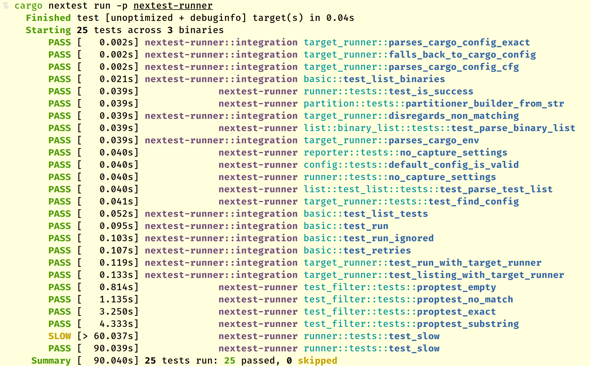

Running tests
To build and run all tests in a workspace1, cd into the workspace and run:
cargo nextest run
This will produce output that looks like:

In the output above:
-
Tests are marked
PASSorFAIL, and the amount of wall-clock time each test takes is listed within square brackets. In the example above,test_list_testspassed and took 0.052 seconds to execute. -
Tests that take more than a specified amount of time are marked SLOW. The timeout is 60 seconds by default, and can be changed through configuration.
-
The part of the test in purple is the binary ID for a unit test binary (see Binary IDs below).
-
The part after the binary ID is the test name, including the module the test is in. The final part of the test name is highlighted in bold blue text.
cargo nextest run supports all the options that cargo test does. For example, to only execute tests for a package called my-package:
cargo nextest run -p my-package
For a full list of options accepted by cargo nextest run, see cargo nextest run --help.
Binary IDs
A test binary can be any of:
- A unit test binary built from tests within
lib.rsor its submodules. The binary ID for these are shown by nextest as just the crate name, without a::separator inside them. - An integration test binary built from tests in the
[[test]]section ofCargo.toml(typically tests in thetestsdirectory.) The binary ID for these is has the formatcrate-name::bin-name. - Some other kind of test binary, such as a benchmark. In this case, the binary ID is
crate-name::kind/bin-name. For example,nextest-runner::bench/my-benchorquick-junit::example/show-junit.
For more about unit and integration tests, see the documentation for cargo test.
Filtering tests
To only run tests that match certain names:
cargo nextest run <test-name1> <test-name2>...
--skip and --exact
Nextest does not support --skip and --exact directly; instead, it supports more powerful filter expressions which supersede these options.
Here are some examples:
| Cargo test command | Nextest command |
|---|---|
cargo test -- --skip skip1 --skip skip2 test3 | cargo nextest run -E 'test(test3) - test(/skip[12]/)' |
cargo test -- --exact test1 test2 | cargo nextest run -E 'test(=test1) + test(=test2)' |
Filtering by build platform
While cross-compiling code, some tests (e.g. proc-macro tests) may need to be run on the host platform. To filter tests based on the build platform they're for, nextest's filter expressions accept the platform() set with values target and host.
For example, to only run tests for the host platform:
cargo nextest run -E 'platform(host)'
Displaying live test output
By default, cargo nextest run will capture test output and only display it on failure. If you do not want to capture test output:
cargo nextest run --no-capture
In this mode, cargo-nextest will run tests serially so that output from different tests isn't interspersed. This is different from cargo test -- --nocapture, which will run tests in parallel.
Doctests are currently not supported because of limitations in stable Rust. For now, run doctests in a separate step with cargo test --doc.
Options and arguments
Build and run tests
Usage: cargo nextest run [OPTIONS] [FILTERS]... [-- <TEST-BINARY-ARGS>...]
Arguments:
[FILTERS]... Test name filter
[TEST-BINARY-ARGS]... Emulated cargo test binary arguments (partially supported)
Options:
-P, --profile <PROFILE> Nextest profile to use [env: NEXTEST_PROFILE=]
-v, --verbose Verbose output [env: NEXTEST_VERBOSE=]
--color <WHEN> Produce color output: auto, always, never [env: CARGO_TERM_COLOR=] [default: auto]
-h, --help Print help (see more with '--help')
Package selection:
-p, --package <PACKAGES> Package to test
--workspace Test all packages in the workspace
--exclude <EXCLUDE> Exclude packages from the test
--all Alias for --workspace (deprecated)
Target selection:
--lib Test only this package's library unit tests
--bin <BIN> Test only the specified binary
--bins Test all binaries
--example <EXAMPLE> Test only the specified example
--examples Test all examples
--test <TEST> Test only the specified test target
--tests Test all targets
--bench <BENCH> Test only the specified bench target
--benches Test all benches
--all-targets Test all targets
Feature selection:
-F, --features <FEATURES> Space or comma separated list of features to activate
--all-features Activate all available features
--no-default-features Do not activate the `default` feature
Compilation options:
--build-jobs <N> Number of build jobs to run
-r, --release Build artifacts in release mode, with optimizations
--cargo-profile <NAME> Build artifacts with the specified Cargo profile
--target <TRIPLE> Build for the target triple
--target-dir <DIR> Directory for all generated artifacts
--unit-graph Output build graph in JSON (unstable)
--timings[=<FMTS>] Timing output formats (unstable) (comma separated): html, json
Manifest options:
--manifest-path <PATH> Path to Cargo.toml
--frozen Require Cargo.lock and cache are up to date
--locked Require Cargo.lock is up to date
--offline Run without accessing the network
Other Cargo options:
--cargo-quiet Do not print cargo log messages
--cargo-verbose... Use cargo verbose output (specify twice for very verbose/build.rs output)
--ignore-rust-version Ignore `rust-version` specification in packages
--future-incompat-report Outputs a future incompatibility report at the end of the build
--config <KEY=VALUE> Override a configuration value
-Z <FLAG> Unstable (nightly-only) flags to Cargo, see 'cargo -Z help' for details
Filter options:
--run-ignored <WHICH> Run ignored tests [possible values: default, ignored-only, all]
--partition <PARTITION> Test partition, e.g. hash:1/2 or count:2/3
-E, --filter-expr <EXPR> Test filter expression (see
<https://nexte.st/book/filter-expressions>)
Runner options:
--no-run Compile, but don't run tests
-j, --test-threads <N> Number of tests to run simultaneously [possible values: integer or "num-cpus"] [default: from profile] [env: NEXTEST_TEST_THREADS=] [aliases: jobs]
--retries <N> Number of retries for failing tests [default: from profile] [env: NEXTEST_RETRIES=]
--fail-fast Cancel test run on the first failure
--no-fail-fast Run all tests regardless of failure
--no-capture Run tests serially and do not capture output
Reporter options:
--failure-output <WHEN> Output stdout and stderr on failure [env: NEXTEST_FAILURE_OUTPUT=] [possible values: immediate, immediate-final, final, never]
--success-output <WHEN> Output stdout and stderr on success [env: NEXTEST_SUCCESS_OUTPUT=] [possible values: immediate, immediate-final, final, never]
--status-level <LEVEL> Test statuses to output [env: NEXTEST_STATUS_LEVEL=] [possible values: none, fail, retry, slow, leak, pass, skip, all]
--final-status-level <LEVEL> Test statuses to output at the end of the run [env: NEXTEST_FINAL_STATUS_LEVEL=] [possible values: none, fail, flaky, slow, skip, pass, all]
--hide-progress-bar Do not display the progress bar [env: NEXTEST_HIDE_PROGRESS_BAR=]
Reuse build options:
--archive-file <PATH> Path to nextest archive
--archive-format <FORMAT> Archive format [default: auto] [possible values: auto, tar-zst]
--extract-to <DIR> Destination directory to extract archive to [default: temporary directory]
--extract-overwrite Overwrite files in destination directory while extracting archive
--persist-extract-tempdir Persist extracted temporary directory
--cargo-metadata <PATH> Path to cargo metadata JSON
--workspace-remap <PATH> Remapping for the workspace root
--binaries-metadata <PATH> Path to binaries-metadata JSON
--target-dir-remap <PATH> Remapping for the target directory
Config options:
--config-file <PATH>
Config file [default: workspace-root/.config/nextest.toml]
--tool-config-file <TOOL:ABS_PATH>
Tool-specific config files
--override-version-check
Override checks for the minimum version defined in nextest's config